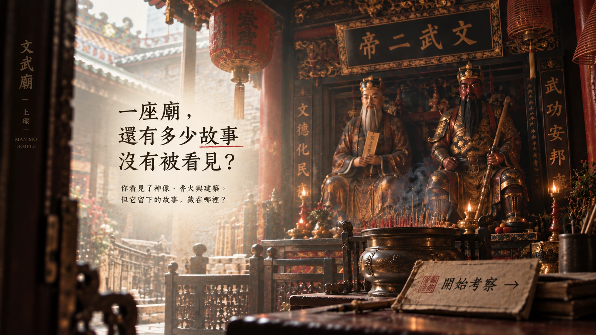
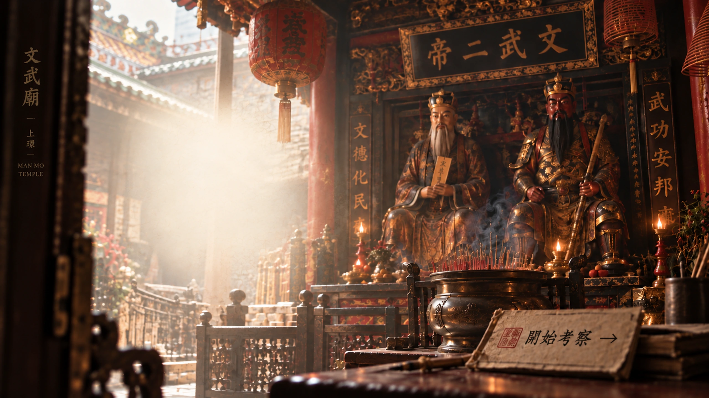
一座廟，還有多少故事沒有被看見？你看見了神像、香火與建築。但它留下的故事，藏在哪裡？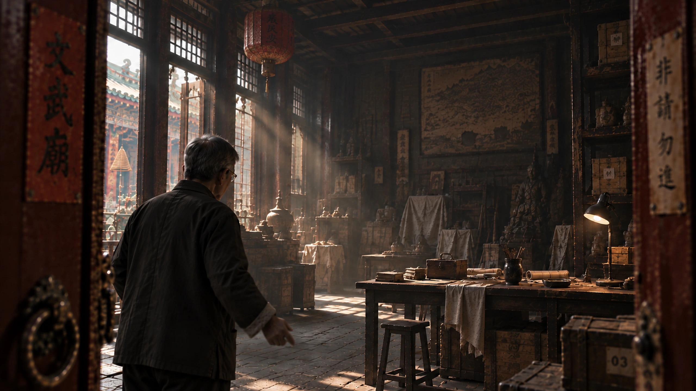
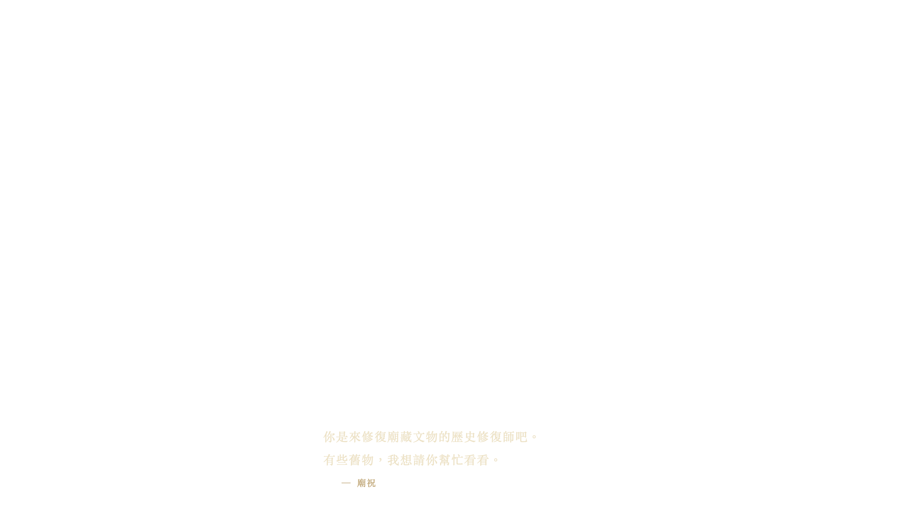
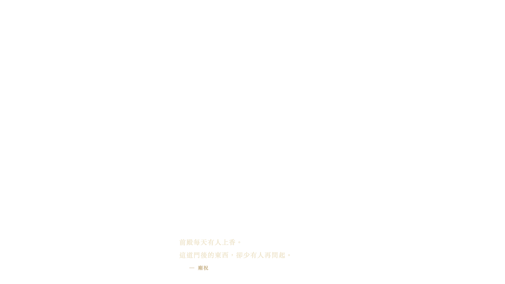
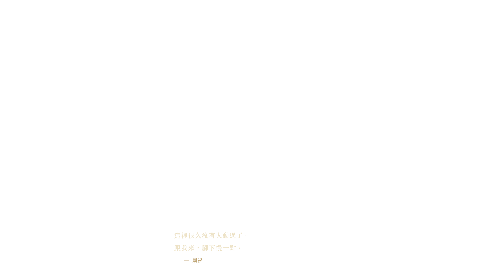
廟祝：你是來修復廟藏文物的歷史修復師吧。有些舊物，我想請你幫忙看看。 廟祝：前殿每天有人上香。這道門後的東西，卻少有人再問起。 廟祝：這裡很久沒有人動過了。跟我來，腳下慢一點。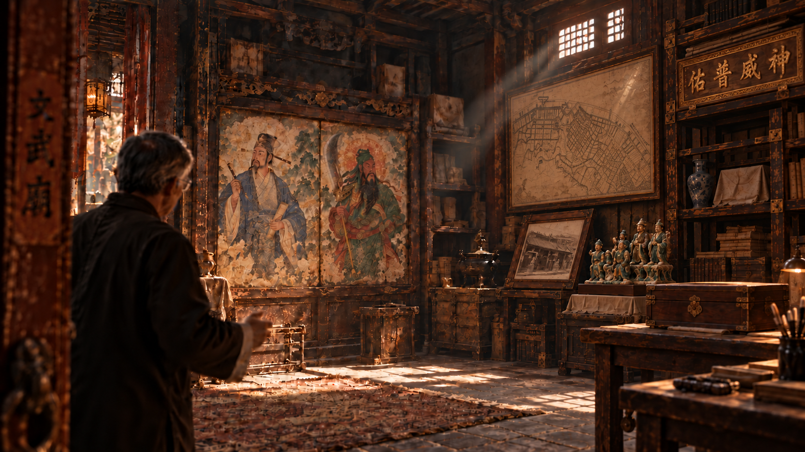

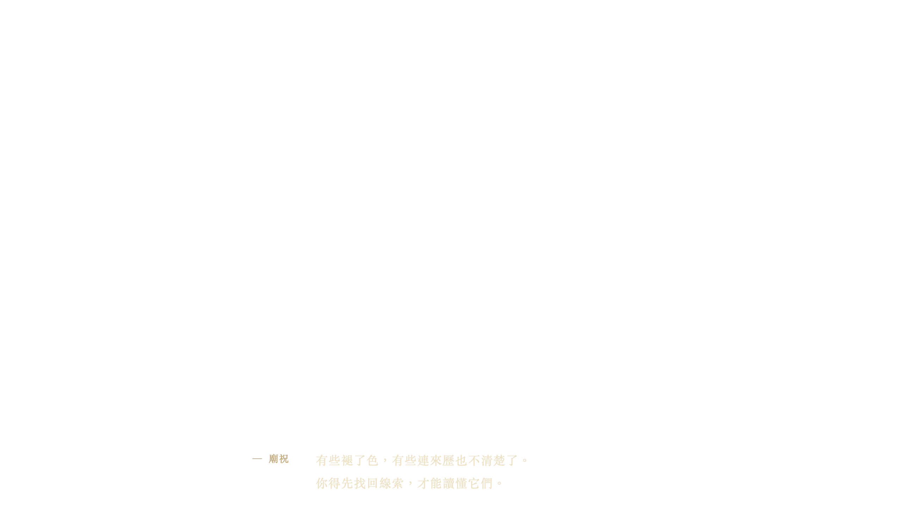
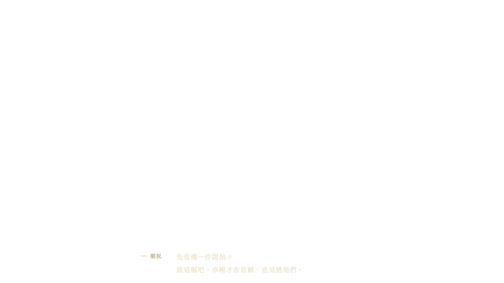
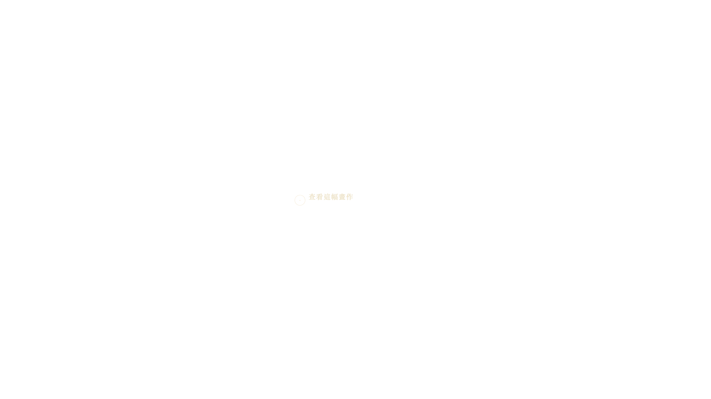
廟祝：畫、舊照片、留下字跡的木匾……這裡有不少等待修復的文物。 廟祝：有些褪了色，有些連來歷也不清楚了。你得先找回線索，才能讀懂它們。 廟祝：先從哪一件開始？就這幅吧。你剛才在前殿，也見過他們。查看這幅畫作。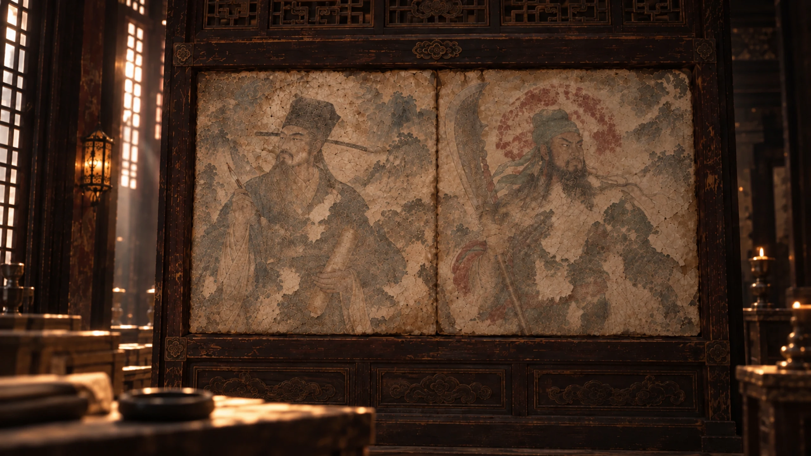
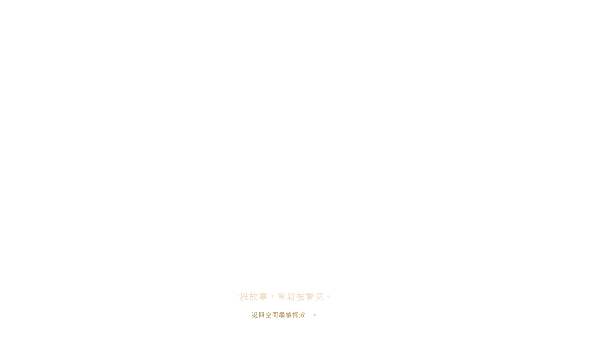
廟祝：仔細看看。哪裡已經看不清楚了？文帝與武帝的畫像隨故事被重新辨認。一個正在形成的社區
19世紀中葉 · 上環
情境重建｜依歷史資料作概略示意
已發現0 / 3
下一份史料將在歷史篇下一幕開啟；這裏仍只是初步推論。